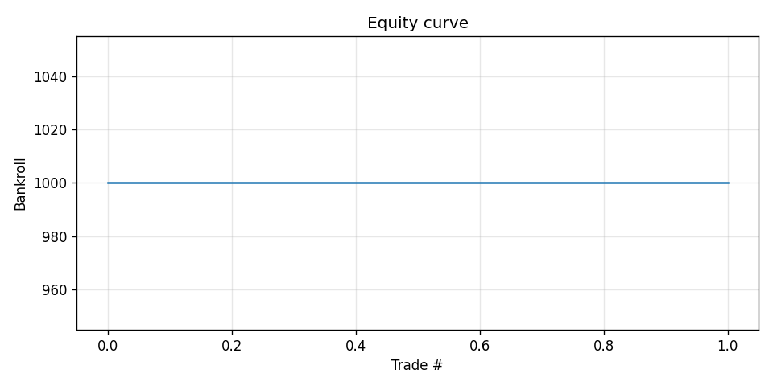
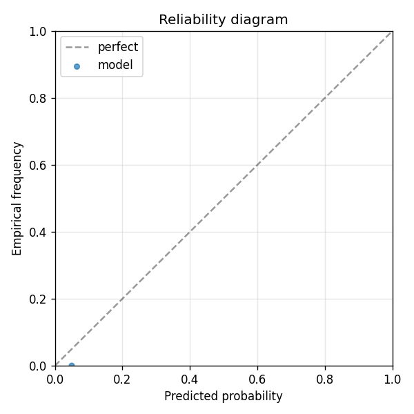

Monthly CPI YoY release. Kalshi lists multiple threshold markets per release (e.g. "Will CPI YoY exceed 2.3%?", "exceed 2.4%?", ...). Each (event, threshold) is one prediction. Edge thesis: combine FRED leading indicators (Truflation, ADP, jobless claims, ISM) with Kalshi's market state. The Federal Reserve paper (Kalshi NBER 2026) showed Kalshi macro contracts beat Bloomberg consensus on out-of-sample windows. Public Kalshi API (api.elections.kalshi.com) returns ~2 years of resolved markets.
| metric | value |
|---|---|
| brier_model | 1e-08 |
| brier_market | 0.0001 |
| brier_improvement | 9.999000000000001e-05 |
| accuracy_model | 1.0 |
| accuracy_market | 1.0 |
| n_events | 2 |
| n_trades | 0 |
| hit_rate | 0.0 |
| gross_return | 0.0 |
| net_return | 0.0 |
| sharpe | 0.0 |
| max_drawdown | 0.0 |
| label_shuffle_brier_improvement | null |

